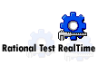

|
Rational Test RealTime helps you, the "developer tester", achieve superior mission-critical code quality in a fraction of the time
typically required. A disciplined and comprehensive testing process can be applied very early on through all the embedded, real-time or
networked system development steps from unit to integration to validation testing. By taking advantage of software execution
observation tools such as code coverage, tracing technologies, performance monitoring and memory usage assessment, you will easily
increase the effectiveness of your test cases. Optimized from the ground up for real-time, embedded and distributed application testing,
Rational's versatile, fully automated, low-overhead testing solution can be implemented on any C, C++, Ada or UML-based component of any size to accelerate your embedded development time-to-reliability for a large set of target platforms. And only Rational offers complete traceability among code, test cases, and models, allowing you to trace the root cause of a problem and effortlessly maintain test assets.
|
 |
 Tool Mentors >
Tool Mentors >
 Rational Test RealTime Tool Mentors
Rational Test RealTime Tool Mentors